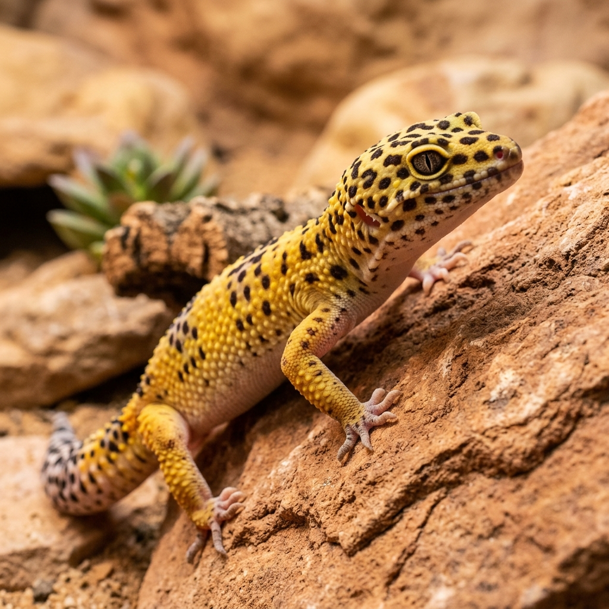
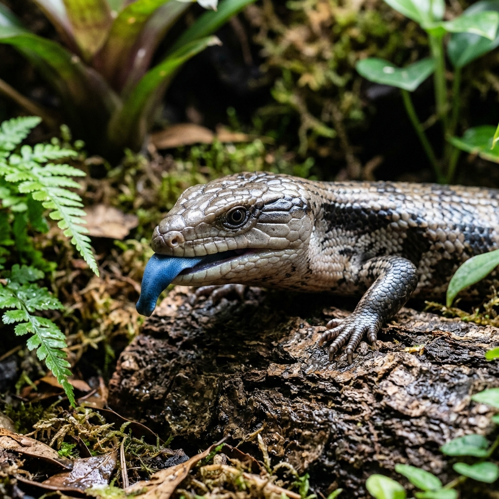

Care Guides
Species-specific husbandry parameters, thermal gradients, UVB indexing, and nutritional regimens to ensure your scaly companions thrive in captivity.
Animal-Specific Care Breakdown
Select any of our core captive-bred species below to inspect verified enclosure dimensions, surface basking temperatures, Ferguson Zone UVB requirements, and age-specific dietary balances.
Central Bearded Dragon
Pogona vitticeps • Arid Woodlands & Scrublands of Central Australia

1. Enclosure Specifications
2. Thermal Gradient
3. UVB Index & Lighting
4. Nutrition & Hydration
- NEVER use loose calcium sand ("Vita-Sand") for juveniles — high risk of fatal intestinal impaction.
- Always verify basking temp with an infrared temp gun; analog dials underread surface slate heat by up to 15°F.
- UVB light cannot penetrate glass or acrylic — bulbs must be mounted inside or over wide wire mesh.
Species Care Manuals
In-depth veterinary guides covering precise environmental parameters, feeding protocols, and disease prevention for captive-bred reptiles.

Bearded Dragon Care
Desert setup requiring a 120-gallon (4'×2'×2') enclosure, 105–110°F surface basking slate, linear T5 HO 10.0 UVB, and an 80/20 greens-to-insect adult diet.

Ball Python Care
Requires 60–65% ambient humidity (75–80% in shed) to prevent respiratory infections and retained eye caps. Belly warmth via thermostat is required for digestion.

Leopard Gecko Care
Crepuscular ground-dweller requiring belly warmth of 88–92°F without bright overhead lights. Must have a dedicated humid moss hide to prevent lost toes from stuck shed.

Crested Gecko Care
Arboreal rainforest gecko thriving at room temp (72–78°F); temperatures over 82°F are fatal. Feed complete CGD fruit powder 3x/week and mist foliage daily.

Veiled Chameleon Care
High-ventilation arboreal specialist needing all-screen cages to prevent lung rot. Drinks exclusively from leaf droplets via automated drippers; never bowls.

Blue-Tongued Skink Care
Heavy-bodied Australian burrower needing 4–6 inches of substrate, 95–100°F basking slate, and a balanced 50% greens / 40% protein / 10% fruit diet.

Humidity & Shedding Guide
Step-by-step diagnostic for resolving retained eye caps, toe constriction rings, digital hygrometer placement, and building effective shedding boxes.

Feeder Nutrition & Gut-Loading
Complete nutritional analysis of Dubia roaches, crickets, black soldier fly larvae, calcium:phosphorus ratios, and 24-hour pre-feed gut-loading formulas.
The Outback Habitat Blueprint: Bearded Dragon

Mastering the 4 Outback Habitat Pillars
Bearded dragons are incredibly hardy when their environmental foundation is sound, but they cannot self-regulate without clear, extreme thermal gradients and strong linear ultraviolet radiation:
The basking spot must be real stone/slate that absorbs heat. Measure surface temperature strictly with an infrared thermometer gun. Ambient air dials are inadequate. Keep the cool retreat at 75°F–80°F.
Compact screw-in coil bulbs do NOT provide sufficient coverage. Mount a linear T5 HO 10.0 or 12% lamp covering 50–66% of the 4-foot tank length at 12–15 inches distance. Replace annually.
Juveniles under 12 months require 80% gut-loaded feeder insects and 20% greens daily. Adults MUST reverse to 80% daily dark leafy greens (collard, dandelion, mustard, turnip) and only 20% insects 2–3 times weekly to prevent fatty liver disease.
Never use commercial calcium sand ("Vita-Sand") or crushed walnut shells. Young dragons ingest substrate when lunging for feeders. Use slate tile or paper towels for juveniles, transitioning to a 50/50 organic topsoil and washed play sand mix for mature adults.
"The most common mistake new keepers make is underestimating the need for intense, quality UVB. It's not just light—it's literal life support for a bearded dragon."
Animal-Specific Care Matrix
Quickly compare thermal parameters, humidity targets, Ferguson Zone lighting indexes, and nutritional schedules across all 6 captive-bred species.
1. Thermal Gradients & Basking Parameters
Measured with digital infrared thermometer| Species | Basking Surface | Warm Ambient | Cool Retreat | Safe Night Minimum |
|---|---|---|---|---|
| Central Bearded Dragon | 105°F–110°F (Slate) | 85°F–90°F | 75°F–80°F | 65°F (No colored night lamps) |
| Ball Python | 88°F–92°F (Floor) | 85°F–88°F | 76°F–80°F | 75°F (Regulated thermostat) |
| Common Leopard Gecko | 88°F–92°F (Floor) | 85°F–88°F | 72°F–76°F | 68°F (Belly heat only) |
| Crested Gecko | 75°F–78°F (Gentle perch) | 72°F–78°F (Room Temp) | 68°F–72°F | 65°F (Lethal above 82°F) |
| Veiled Chameleon | 85°F–90°F (Branch) | 78°F–82°F | 70°F–75°F | 60°F–68°F (Vital recovery drop) |
| Northern Blue-Tongued Skink | 95°F–100°F (Stone) | 82°F–88°F | 75°F–80°F | 68°F (Deep substrate bed) |
2. Humidity Ranges & Hydration Protocols
Measured at mid-level with digital hygrometer| Species | Target RH % | Hydration Delivery | Misting Frequency | Shedding Support |
|---|---|---|---|---|
| Central Bearded Dragon | 30%–40% | Shallow clean dish + greens droplet mist | Rarely (avoid tank humidity spikes) | Weekly warm 15-minute shallow bath |
| Ball Python | 60%–65% | Heavy ceramic water bowl (submergible) | As needed to maintain 60%+ | Spike to 75%–80% in shed |
| Common Leopard Gecko | 30%–40% | Shallow ceramic water dish | Humid hide only (do not mist main tank) | Enclosed damp sphagnum moss hide 24/7 |
| Crested Gecko | 60%–80% | Foliage droplets + elevated ledge cup | Twice daily (heavy evening, light morning) | Requires dry-down to 50% midday |
| Veiled Chameleon | 50%–70% | Automated overhead dripper onto broad leaves | 2–3 times daily (2–3 minutes each) | Will NOT drink from water dishes |
| Northern Blue-Tongued Skink | 40%–60% | Large tip-proof heavy water bowl | Light morning spray on cypress substrate | Moist moss burrow box during shed |
3. UVB Lighting & Ferguson Zone Classifications
Linear T5 HO systems recommended| Species | Ferguson Zone | Recommended UVB Bulb | Basking Distance | Photoperiod & Lifespan |
|---|---|---|---|---|
| Central Bearded Dragon | Zone 3 (UVI 2.9–7.4) | Linear T5 HO 10.0 or Arcadia 12% Desert | 12–15 inches above slate | 12h on / 12h off • Replace every 12 mo |
| Ball Python | Zone 1 (UVI 0.4–1.4) | Arcadia ShadeDweller T5 7% or 2.4% | 12–18 inches above hides | 12h on / 12h off • Optional welfare lighting |
| Common Leopard Gecko | Zone 1 (UVI 0.5–1.2) | Arcadia ShadeDweller T5 7% (2.4% for albinos) | 10–12 inches above substrate | 12h on / 12h off • Replace every 12 mo |
| Crested Gecko | Zone 1 (UVI 0.4–1.0) | Linear T5 ShadeDweller 2.4% or 7% | 10–12 inches from topmost vine | 10–12 hours daily • Promotes day/night cycle |
| Veiled Chameleon | Zone 3 (UVI 2.6–3.5) | Linear T5 HO 6.0 or 10.0 over full screen top | 10–12 inches from perch | 12h on / 12h off • Mandatory for MBD prevention |
| Northern Blue-Tongued Skink | Zone 2–3 (UVI 1.5–3.0) | Linear T5 HO 10.0 or 6.0 Forest | 12–15 inches above basking stone | 12h on / 12h off • Dramatically boosts vitality |
4. Nutrition Profiles & Supplementation Schedules
Veterinary-approved dietary ratios| Species | Staple Diet Formulation | Feeding Cadence (Adult) | Pure Calcium (No D3) | Calcium+D3 & Multivitamin |
|---|---|---|---|---|
| Central Bearded Dragon | 80% dark leafy greens • 20% gut-loaded Dubia/BSFL | Daily greens • Insects 2–3x weekly | Every insect feed | Ca+D3 2x/month • Multi 2x/month |
| Ball Python | Frozen/thawed whole rats (equal to snake mid-girth) | 1 appropriate rodent every 10–14 days | Not needed | Not needed (whole prey complete) |
| Common Leopard Gecko | 100% insectivore: live Dubia, crickets, mealworms | 6–8 insects 2–3 times per week | In shallow dish in tank 24/7 | Ca+D3 2x/month • Multi 1x/month |
| Crested Gecko | Commercial CGD fruit powder (Pangea/Repashy) | Fresh CGD 3x weekly • 3–4 bugs weekly | Lightly dust bugs | Complete in CGD powder formula |
| Veiled Chameleon | Gut-loaded insects + hibiscus, dandelion, kale | 5–6 large insects every other day + greens | Every insect feed | Ca+D3 2x/month • Multi 1–2x/month |
| Northern Blue-Tongued Skink | 50% Greens • 40% Protein (Dubia, snails, turkey) • 10% Fruit | Quality meal 2–3 times per week | Every other feed | Ca+D3 2x/month • Multi 2x/month |
Keeper Workshops

Learn from the Pros
Join our in-store workshops to get hands-on experience with habitat building, handling techniques, and nutritional prep. Perfect for new keepers looking to build confidence.
-
Bioactive Basics Next Saturday @ 2PM
-
Handling Fear Free Nov 12th @ 5PM